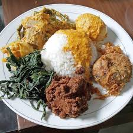

hidangan lauk pauk yang berasal Minangkabau, Indonesia dengan bahan dasar daging yang melalui proses memasak dengan suhu rendah dalam waktu lama dengan menggunakan aneka rempah-rempah dan santan.
1 kg daging sapi, 1 liter santan kental murni, dan aneka rempah aromatik seperti daun kunyit dan serai